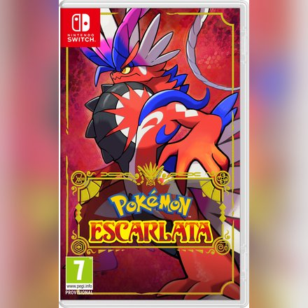
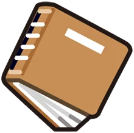
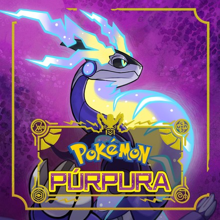
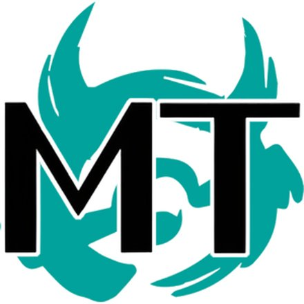
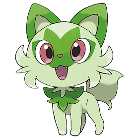
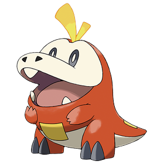
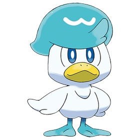

Pokémon Escarlata
Nintendo Switch · 2022
Región de Paldea · Escarlata y Púrpura (2022)
Paldea se inspira en la península ibérica, es decir, en España y Portugal. Es una región de mundo abierto, con montañas, desiertos, costas, una gran academia y un enorme cráter en el centro.

Historia de Paldea

Nintendo Switch · 2022

Nintendo Switch · 2022

Nintendo Switch · 2023
Nintendo Switch · 2023
La primera parte del DLC transcurre en Noroteo (Kitakami), una tierra rural con festivales y leyendas propias.


La segunda parte transcurre en la Academia Arándano, una escuela en mitad del mar con un gran hábitat interior: el Terario.




